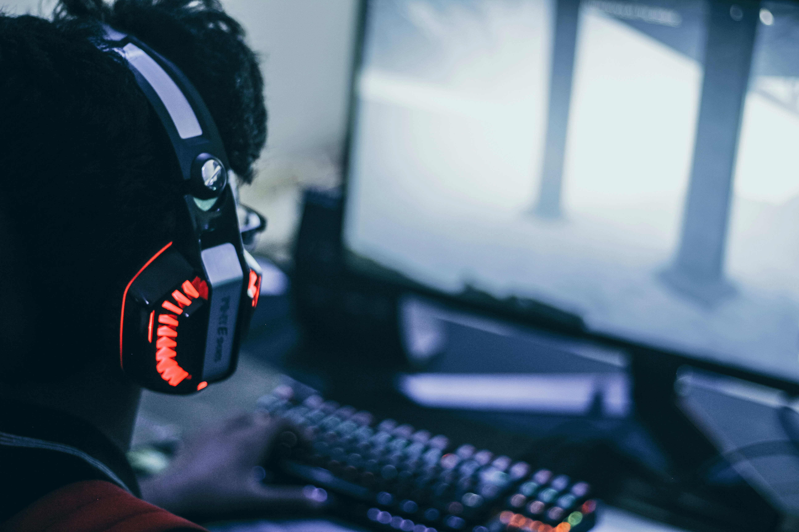
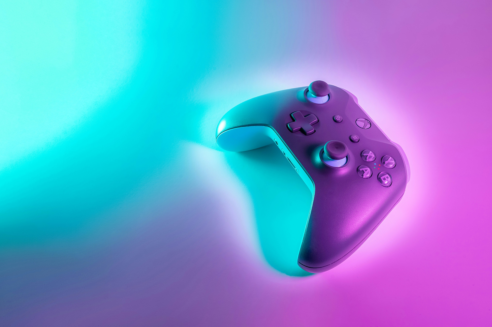
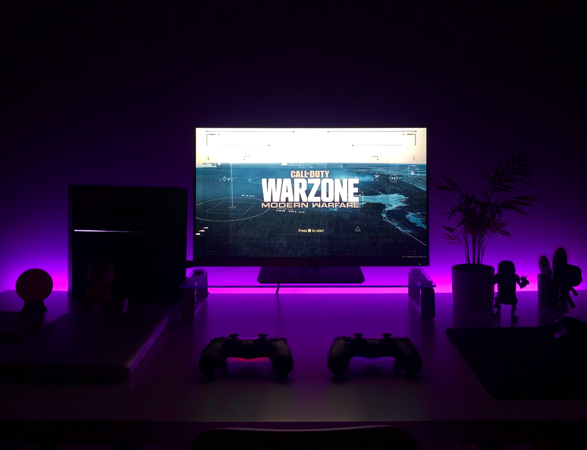

Best Gaming Accessories in 2026
A great gaming setup is more than just a powerful PC or console. The right accessories can improve comfort, reaction time and the overall gaming experience. Whether you're a casual gamer or a competitive player, investing in quality accessories can make a noticeable difference.
Choose gaming accessories based on comfort, durability and compatibility with your PC or console instead of focusing only on appearance.
1. Gaming Keyboard

Mechanical gaming keyboards offer faster response times, satisfying key feedback and customizable RGB lighting. They are ideal for both gaming and typing.
- Mechanical switches
- RGB backlighting
- Programmable keys
- Durable construction
Best keyboards you can buy in 2026
Buy on Amazon Buy on Amazon Buy on Amazon2. Gaming Mouse

A lightweight gaming mouse with adjustable DPI and programmable buttons provides better control and precision during gameplay.
Best gaming mouse you can get in 2026
Buy on Amazon Buy on Amazon Buy on Amazon3. Gaming Headset

A quality headset delivers immersive sound, clear communication and improved awareness of in-game audio cues, especially in multiplayer games.
Best gaming headset you can get in 2026
Buy on Amazon Buy on Amazon Buy on Amazon4. Gaming Controller

Modern wireless controllers provide comfortable ergonomics and accurate controls for racing, sports and action games.
Best gaming controller you can get in 2026
Buy on Amazon Buy on Amazon Buy on Amazon5. Gaming Monitor

A high refresh rate monitor with low response time creates smoother gameplay and reduces motion blur, especially in competitive games.
Best gaming monitor you can get in 2026
Buy on Amazon Buy on Amazon Buy on AmazonOther Useful Gaming Accessories
- Large mouse pad Buy on Amazon
- Gaming chair Buy on Amazon
- Webcam for streaming Buy on Amazon
- USB microphone Buy on Amazon
- Controller charging dock Buy on Amazon
- External SSD Buy on Amazon
- RGB desk lighting Buy on Amazon
How to Build the Perfect Gaming Setup
Start with accessories that improve your gaming experience the most. A good keyboard, mouse and headset are often more important than decorative RGB lighting. As your budget grows, you can add a better monitor, microphone and streaming equipment.
Final Thoughts
The best gaming accessories combine performance, comfort and reliability. By choosing high-quality equipment, you can enjoy a more immersive and enjoyable gaming experience whether you're playing on a PC or console.
Follow Wanderur Journal for more technology news, gadget reviews and gaming guides.